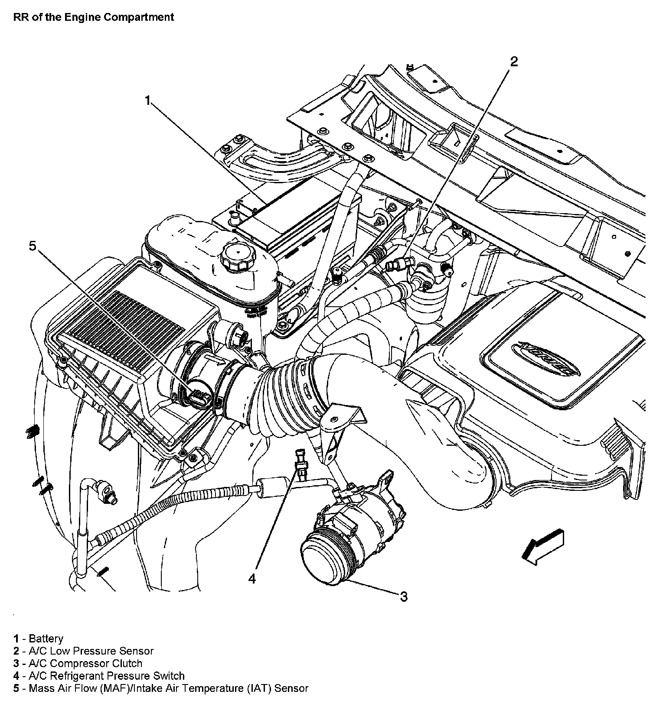

Operation CHARM
: Car repair manuals for everyone.
Home
>>
Cadillac
>>
2007
>>
Escalade ESV AWD V8-6.2L
>>
Repair and Diagnosis
>>
Powertrain Management
>>
Computers and Control Systems
>>
Air Temperature Sensor ( Ambient / Intake )
>>
Locations
Air Temperature Sensor ( Ambient / Intake ): Locations
RR of The Engine Compartment:
